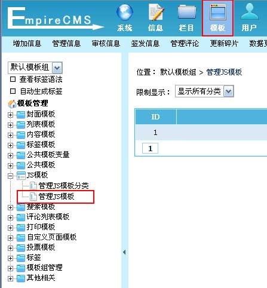
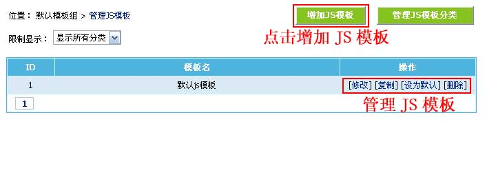
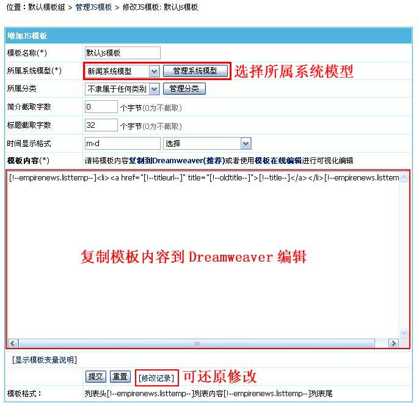
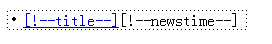
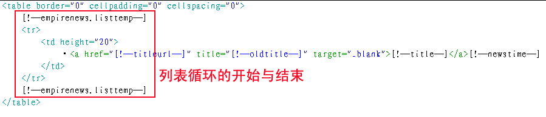
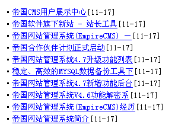

| JS模板是指JS调用使用的模板。（系统调用信息同时支持用标签调用与JS调用） |
|
||
| JS模板制作格式 |
| 列表头 [!--empirenews.listtemp--] 列表内容 [!--empirenews.listtemp--] 列表尾 |
| 说明：第一个[!--empirenews.listtemp--]表示循环开始、第二个[!--empirenews.listtemp--]表示循环结束。 |
| 管理JS模板 | |||||||||||||||||||||||||||||||||||
| 1、登录后台，单击“模板”菜单，选择“管理JS模板”子菜单，进入管理JS模板界面： | |||||||||||||||||||||||||||||||||||
|  | |||||||||||||||||||||||||||||||||||
| 2、进入管理JS模板界面：(蓝色背景为默认模板) | |||||||||||||||||||||||||||||||||||
|  | |||||||||||||||||||||||||||||||||||
| 3、点击“修改”进入修改JS模板界面： | |||||||||||||||||||||||||||||||||||

JS模板支持的变量：
|
| JS模板制作范例 |
| 1、用dreamweaver制作好模板界面，然后在表单加上JS模板标签变量： |
| 图1：设计视图  代码：  |
| 2、显示效果 |
|  |
| 其他说明 |
| 1、“所有信息最新JS”、“所有信息热门JS”等是使用默认JS模板。 |